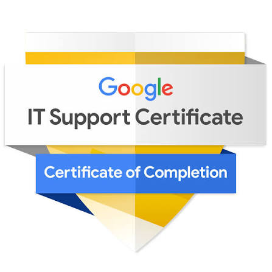
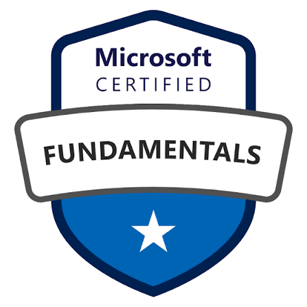
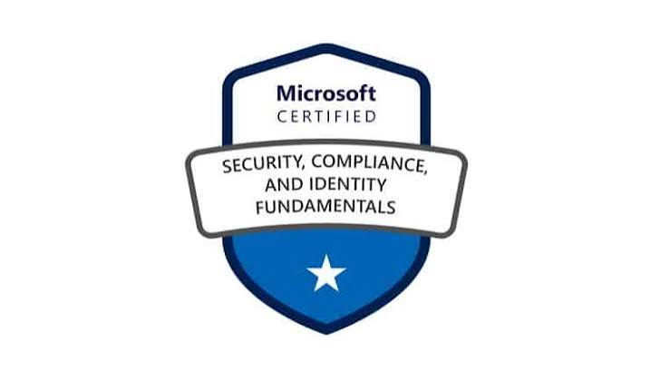
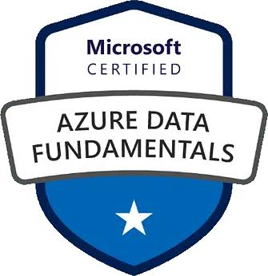

Certifikaten
Du behöver certifikat — och sedan, viktigast av allt: momentum och tid. Här är de tre vägarna. De ligger bredvid varandra — du väljer den som passar din plånbok och ditt mål.
Tre vägar — sida vid sida
Microsoft Learn
- Kostnad: 0 kr. På riktigt.
- Officiellt utbildningsmaterial direkt från Microsoft, med märken (badges) för LinkedIn
- Börja med: Windows-grunder, nätverksgrunder, Azure fundamentals
- Grunden för alla vägar — och hela vägen till Microsoft-certen
Google IT Support + AZ-900


- Steg 1 — Google IT Support. Kostnad: gratis med Financial Aid — ansök via "Financial aid available" på certifikatsidan, svar efter ca 15 dagar. Utan stöd: ca 500 kr/mån
- Byggt för nybörjare: datorer, nätverk, Windows, Linux, säkerhet. Inga förkunskapskrav alls
- Steg 2 — ta AZ-900 också. När IT Support-certifikatet sitter: plugga AZ-900 via Microsoft Learn (gratis material) och skriv tentan. Då har du både bredden och ett Microsoft-certifikat — en stark kombination
Microsoft-certifikaten


- Ordningen: AZ-900 → SC-900 → DP-900 (moln → säkerhet → data)
- Kostnad: ca 1 000–1 200 kr per tenta ($99, regionsjusterat). Materialet är gratis på Microsoft Learn
- Spartips: Microsofts gratis "Virtual Training Days" ger ofta 50 % rabatt på tentan — ibland t.o.m. gratisvouchers. Kolla innan du bokar!
- I Sverige är Microsoft överlägset störst hos arbetsgivarna — dessa cert väger tungt här
Regeln som gäller alla vägar: till Microsoft-certifikaten pluggar du alltid via Microsoft Learn — det är deras eget material, det är gratis, och det täcker exakt det tentan frågar om. Till Google-certifikatet: dess eget material.
Snabbaste vägen? 🚀
Vill du inte betala något än: börja i väg 1 och bygg förståelse gratis — certet kan komma senare. Vill du ha ett cert så fort som möjligt: ge dig på väg 2 (Google IT Support) eller väg 3 (AZ-900) direkt. Alla tre funkar. Välj och kör.
Övningsprov — din mätare 📊
Innan du bokar tentan: kör övningsprov (Microsoft har gratis officiella "practice assessments"; till Google-certifikatet fungerar dess quiz som mätare).
- Sikta på 100 % rätt på övningsproven — då skriver du tentan med marginal.
- Ligger du konsekvent över 80 % har du goda chanser. Boka datumet.
- Posta gärna ditt övningsresultat på LinkedIn — det är också momentum (se Dokumentera).
Vad ett cert faktiskt är — och inte är 🔒
Ett cert är ett bevakat prov — online med övervakning eller på plats i testcenter. Du kan inte fuska. Och även om det skulle gå: gör det inte. Då har du inte lärt dig något, och det är kunskapen som ska bära dig genom intervjun och första jobbet.
Men var ärlig med vad certet är: det är inte grunden i ditt CV — det är guldstjärnan på ett bra CV. Grunden är dina labbar, din dokumenterade resa och din vilja att lära. Certet öppnar dörren till intervjun; labbarna och du själv tar dig genom den. Därför: cert + labbar + synlighet. Aldrig bara certet.
Takten mellan certen ⏱️
- Din egen takt. Tidslinjer här är teoretiska — en driven person kan klara ett grundcert på en vecka, för andra tar det tio veckor eller mer. Båda är helt okej. Du väljer din studietakt.
- Men mellan varje cert: publicera labbevis på LinkedIn (skärmdump på något du byggt eller felsökt — se Dokumentera). Hellre fler inlägg än inga alls.
- Prio 1: uppdatera CV:t. Varje nytt labb och varje nytt cert in i CV:t direkt. Ett uppdaterat CV är alltid redo när rätt annons dyker upp.
- Nästa cert: när du känner dig mogen — via Microsoft Learn, alltid, för Microsoft-certen.
Vad öppnar detta för dörrar? 🚪
Ärligt svar: det här öppnar entry-nivån i IT — support, servicedesk, tekniker. MEN: det kan bli bättre än så, beroende på hur mycket du labbat och kan bevisa. Det som jobbar emot dig är tiden — hur länge du hållit på. Erfarenhet väger tyngre ju längre fram du kommer. Därför är målet enkelt: få första jobbet, prestera där, och ta dig vidare. Det här är inte slutmålet — det är språngbrädan in i IT. Den här vägen tog jag, och den fungerar för andra också.
Och om högskolan, rakt ut: det här spåret ersätter inte en högskoleutbildning — en civilingenjör och ett grundcertifikat är olika saker som leder till olika roller. Men vet du inte vad du vill jobba med, och vill inte lägga 3+ år på högskola eller 1+ år på yrkesutbildning för något du kanske inte ens gillar? Då är det här ett riktigt alternativ för starten i IT: nästan gratis, i din takt, och du vet inom några veckor om det är din grej. Olika mål, olika vägar.